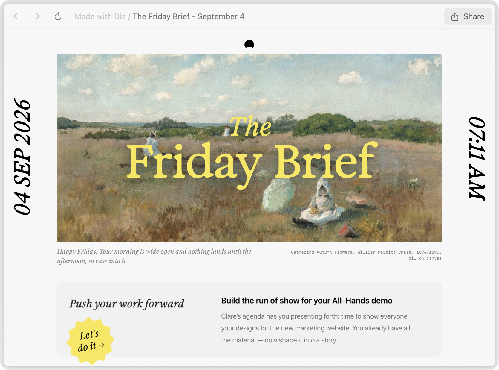
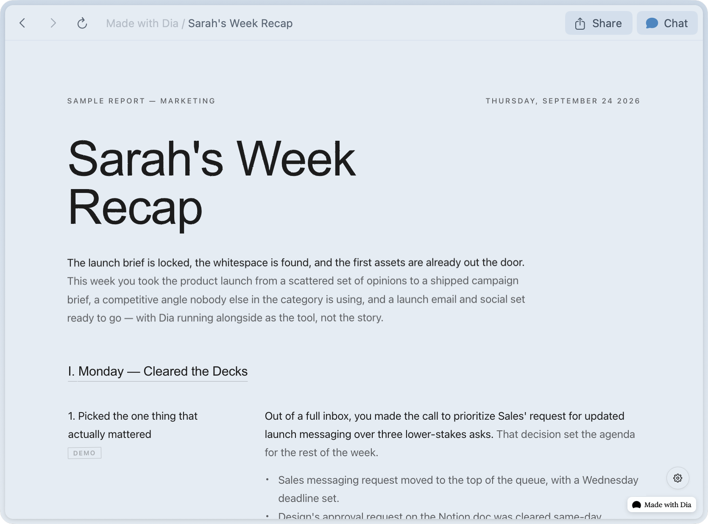
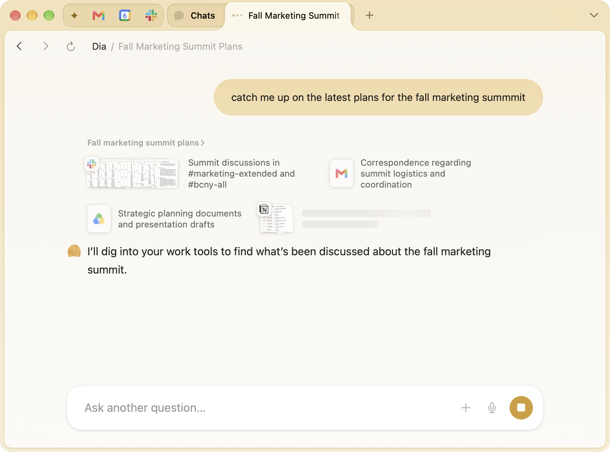
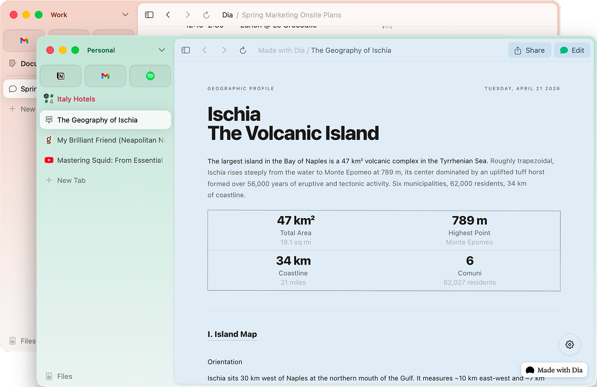
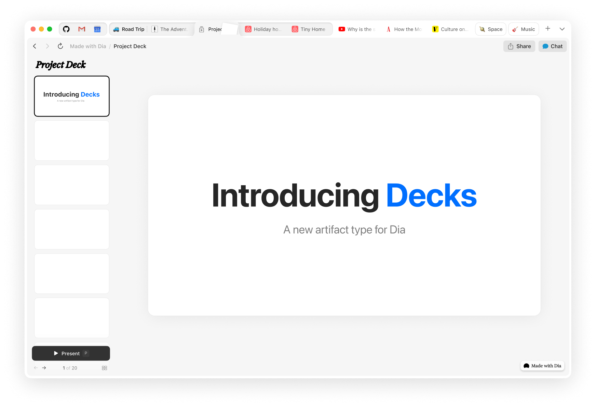
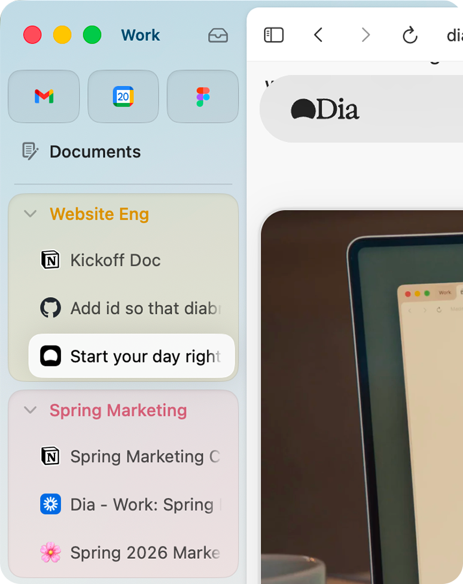

More than a browser. A better workday.
Available for macOS and Windows
Astra reads between the tabs

Start your day two steps ahead
Before the day kicks in, Astra's Morning Brief lays it all out (calendar, inbox, key links) so you know exactly what you're walking into.

Synthesis you'll actually use
Instead of bouncing between tools, just ask Astra. It gathers what's scattered across your tools (Slack, Notion, Teams, and many more!) and turns it into a report worth sharing.

Find the answer without hunting it down
Ask once. Astra digs into your full context, across GSuite, Teams, tabs, and more, and answers like someone who's seen every thread.
Astra reads between the tabs
Built for how you actually work
Built for how you actually work
Create clean lines between work, freelance, and personal life, with separate tabs, logins, and AI. Context switch between them in just a swipe.

Astra pulls together the places where work is actually happening (like GitHub and Notion) in your tab bar. Click once and land directly in the right PR, spec, or draft.
Every call starts with the right meeting page, agenda, notes, and related docs open, with a gentle countdown so you’re on time. All you have to do is show up.
See a meeting on one side and a doc on the other without juggling windows. Astra remembers your layout, so your favorite setup for recurring 1:1s or focus time is one click away.
Ask Astra for a deck and your scattered context becomes real slides — headers, layout, and flow you can present without a redesign.

Keep your workspace tidy by grouping related tabs with appropriate naming, so you see “Design Review” or “Q2 Planning” instead of a long strip of unnamed pages.

Privacy first with you in control
Privacy first
with you in control
You control whether Astra remembers your preferences and which tools connect to your workflow. Your data is never sold or used to build ad profiles — and with Sync, it's end-to-end encrypted.
Astra for Work adds the guardrails that your team needs, like SSO and admin tools, so your team can stay secure.